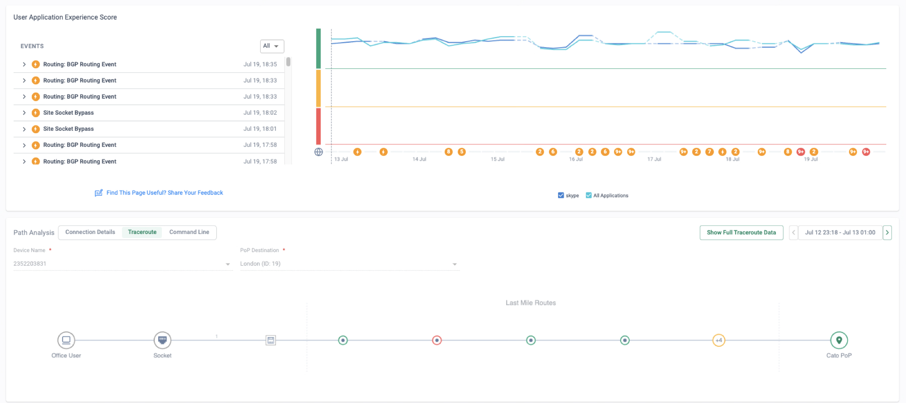
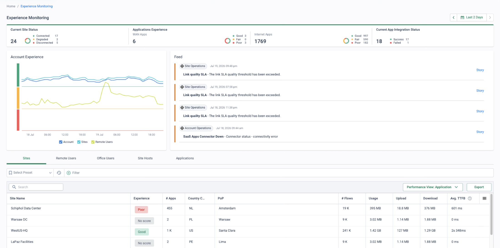
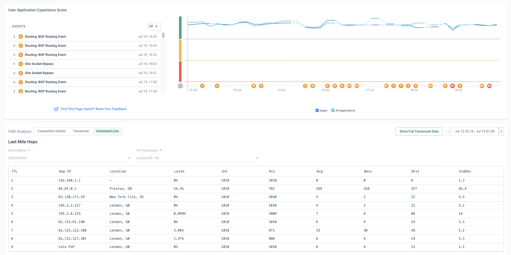
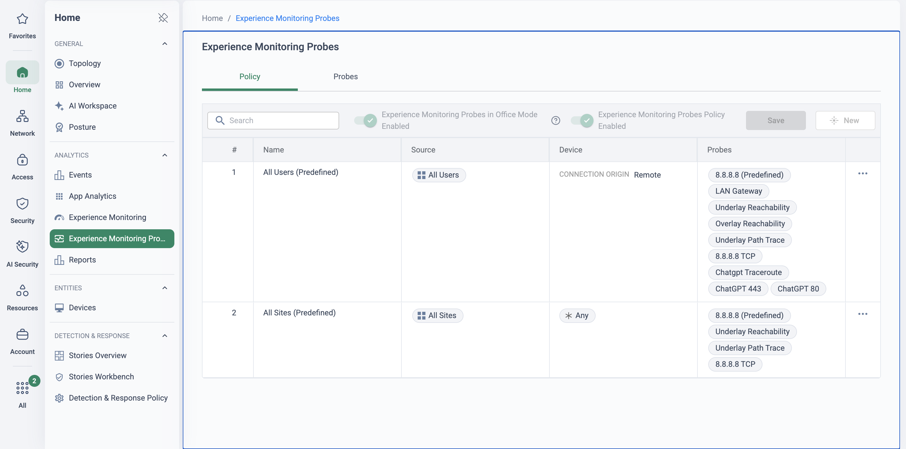

Why this matters
Users don’t experience your network, your security stack or your SaaS contracts — they experience a Teams call that stutters, a CRM page that hangs, a file that won’t upload. When that happens, the ticket says “the app is slow”, and the truth is buried somewhere along a path that crosses half a dozen ownership boundaries: the laptop, the home Wi-Fi, the ISP, the middle mile, the provider’s cloud, the application itself.
The objective: answer “where is it slow, and for whom?” from one console, in seconds — and increasingly, spot the degradation and act on it before the first user picks up the phone.
Where “the app is slow” tickets go to die
Every segment of the user-to-app path has a different owner, a different tool and a different definition of “fine”. Traditional monitoring watches infrastructure the organisation owns — which is precisely the part of the path a hybrid worker’s traffic barely touches.
| Path segment | Who owns it | How it’s diagnosed today |
|---|---|---|
| Device (CPU, memory, Wi-Fi signal) | Desktop / endpoint team | Remote-control session, ask the user to reboot |
| Home or branch Wi-Fi / LAN | User at home; network team in the office | Guesswork — “try moving closer to the router” |
| ISP last mile | The ISP — “no fault found” | Speed-test screenshots, circular support calls |
| Middle mile / internet core | Nobody you can call | Traceroute fragments, blamed by default |
| The application | SaaS vendor | Status page says green, case closed |
The war-room pattern
Network, security and app teams each check their own dashboard, each declare their layer healthy, and the ticket bounces until the user gives up or the symptom disappears. Mean time to innocence is fast; mean time to resolution is not.
The reactive pattern
IT learns about degradation from the helpdesk queue. By the time tickets cluster, a site has been limping on a lossy circuit for days — with no baseline to prove when it started or evidence to hold the ISP to.
“When a user says Teams is slow, how many tools — and how many teams — does it take you to say with confidence whether it’s the laptop, the Wi-Fi, the ISP or the app?”
The whole path, one view, per user
Cato is in a unique position to answer the question: the Cato Client on the device, the Socket at the site, the PoP and the global private backbone are all one platform — so Cato observes every hop the traffic actually takes. Experience Monitoring turns that into an experience score — Good, Fair or Poor — for every site, user, host and application, decomposed node by node in the Connection Details view: device hardware → Wi-Fi → LAN gateway → last mile → PoP → application (plus first mile and destination Socket when the app sits behind another site). Each node is scored independently and coloured green, yellow or red; hover shows its averages, and clicking expands the underlying graphs. The failing segment is measured, not inferred.
![CMA user drill-down: a User Application Experience Score timeline with connect and disconnect events, above the Path Analysis Connection Details tab showing the node chain device, Wi-Fi, LAN gateway, last mile, London PoP, application. Each node has its own scored row: device hardware Good at 19.81 percent average CPU, Wi-Fi Fair at minus 67.43 dBm average signal strength shown amber, LAN gateway Good with zero packet loss and 3 milliseconds distance, last mile Good with zero probe loss and 15 milliseconds round trip, and the application Good.](../assets/img/em-connection-details.png)
What Experience Monitoring measures
The application experience score is not a generic SLA gauge. Cato builds an AI baseline per application from real traffic generated by all Cato users, then scores each user, site and host relative to that expectation on five metrics: Time to First Byte, TCP Connect, TLS Connect, HTTP latency and HTTP/S error rate. Good means better than expected, Fair in the expected range, Poor worse. Because every app is scored separately, a Europe-hosted app accessed from Sydney is judged against what that path should deliver — not against a one-size-fits-all threshold. Two honest caveats from the documentation: application metrics are calculated for outbound TCP traffic, and scores are based on successful flows — blocked traffic doesn’t count.
Alongside the passive app scoring, the last mile is measured by two kinds of probes: overlay probes inside the DTLS tunnel (loss up/down, latency, jitter, throughput, tunnel age) and underlay probes sent outside the tunnel, Socket-to-PoP per WAN interface or Client-to-PoP for remote users. When overlay and underlay both show loss, the ISP circuit is the problem — not the tunnel.
How each node is scored
Node colours in Connection Details aren’t vibes — the thresholds are published. Each node is scored independently on its own metrics:
| Node | Metric | Good | Fair | Poor |
|---|---|---|---|---|
| Device hardware | CPU load | < 70% | 70–90% | > 90% |
| Memory load | < 60% | 60–80% | > 80% | |
| Wi-Fi | Signal strength | ≥ −67 dBm | −67 to −80 dBm | ≤ −80 dBm |
| LAN gateway | Packet loss | < 1% | 1–5% | > 5% |
| Round-trip latency | < 10 ms | 10–50 ms | > 50 ms | |
| Last mile (tunnel) | Packet loss (up / down) | < 1% | 1–5% | > 5% |
| Tunnel distance | < 20 ms | 20–100 ms | > 100 ms | |
| Socket | CPU load, worst core of primary Socket | < 70% | 70–90% | > 90% |
| Application | TTFB, TCP/TLS Connect, HTTP latency & errors | Scored against the app’s AI baseline | ||
Experience Monitoring needs no extra agents — the Cato Client and Socket already supply the telemetry — but the DEM pages and features require a separate DEM licence. Device, Wi-Fi and LAN gateway nodes need the Client on the endpoint (Windows v5.12.10 / macOS v5.7 or higher); underlay probes need Socket v21.1.18975+, or Client Windows 5.17 / macOS 5.10+ for remote users.
What this changes for IT operations
Fault domain in one view
Device, Wi-Fi, LAN gateway, last mile, PoP and app health side by side — the conversation starts at the failing node, not at “whose fault is it?”.
Fewer helpdesk escalations
First-line support reads the experience score and segment breakdown directly, so tickets stop bouncing between network, security and app teams.
Evidence for ISP disputes
Last-mile loss, latency and jitter over time — plus hop-by-hop traceroute history with per-hop loss — turn “no fault found” into a documented circuit case the ISP has to answer.
Baseline and trend, per site and user
Experience is tracked continuously (up to three months back), and the XOps anomaly engine checks every site-and-app pair against its own baseline daily — degradation surfaces before users call it in.
Probes, path analysis and proactive detection
Out of the box, Experience Monitoring passively scores every sanctioned application that traverses the Cato Cloud. Three capabilities take it from “dashboard you check” to “system that tells you”:
Synthetic probes on your terms
Under Home → Experience Monitoring Probes, define ICMP, TCP, HTTP/S and DNS probes (traceroute probes are early availability, from Socket v25) to any Internet or WAN destination — your ERP, your DNS server, a partner portal — and map each probe to the application whose pages should show its metrics. Every probe measures latency and packet loss at a configurable interval, per Socket and per user. An ordered, rule-based policy controls who sends what: rules target sites, countries, user groups, platforms and device-posture profiles, with up to 20 probes per rule, and a Use Probes in Office Mode toggle extends user probing behind Sockets. Typical play: probe a business-critical app for one pilot group first, read the data, then roll the rule out estate-wide.
Hop-by-hop traceroute path analysis
The Path Analysis widget on the site, office-user and host drill-down pages visualises continuous traceroute data in two sections: Last Mile Routes (Socket → PoP, from the predefined Underlay Path Trace probe) and Application Routes (PoP → app, from a custom traceroute probe). The Command Line tab renders it like a CLI tool — per hop: IP, geolocation, loss %, average / best / worst latency and standard deviation — with historical time ranges for intermittent faults and a copy-out of the full traceroute data. If loss starts before the PoP, it’s the local network or the ISP; if it starts on the application route, the problem is beyond Cato. That print-out is the ISP escalation artefact.

Anomaly stories, before the tickets
The XOps Experience Anomaly engine baselines Time to First Byte for each site-and-application pair over 14 days, then evaluates every day’s traffic against that evolving baseline. Deviations raise stories — “Application Response Time Anomaly in Site” or “Potential Application Outage Due to Widespread HTTP Errors” — in the Experience Monitoring feed and the Stories Workbench, each with a criticality rating and a step-by-step playbook workflow.
Scheduled experience reports
Predefined Site Experience and Site and User Experience report templates generate one-time or recurring PDFs — daily, weekly or monthly — emailed to a mailing list from Home → Reports. Top users by CPU, memory, Wi-Fi signal, LAN gateway RTT and tunnel RTT, per site: the monthly service review writes itself.
How to run the demo
Ask how a “Teams is slow” ticket flows through their organisation today: who touches it, how long it stays open, how often it closes as “no fault found”. Anchor every step of the demo back to that answer. Practically: confirm the demo tenant has a DEM licence, and if you want per-meeting Teams metrics, that the Teams UCaaS connector is configured.
-
Open Experience Monitoring and rank by experience
Home → Experience Monitoring
Start at the summary bar and the Account Experience score — Good means no global problem, so anything degraded is local and findable. Switch between the Sites, Remote Users, Office Users, Site Hosts and Applications tabs and sort by experience, worst first. This is the helpdesk queue before it happens — the entries at the top are the users about to call.

Home → Experience Monitoring — the triage screen. Top strip: estate status at a glance (24 sites — 2 degraded, 5 down; 182 internet apps scoring Poor). Point at the feed — Link quality SLA exceeded stories raised by the platform, not by users — then at the Sites tab, where Schiphol Data Center sits at Poor (601 ms avg TTFB across 455 apps) while WestUS-HQ scores Good: the worst-first sort has already found tomorrow’s tickets. -
Drill into a struggling user
Pick a low-scoring user — say Marcus, an office user behind an LTE-equipped site — to open his drill-down page. In the Select Application widget, filter to Microsoft Teams and show his score graph against the all-apps line. With the Teams connector configured, the meetings widget shows each call’s audio, video and screen-sharing experience — MOS-based, from loss, jitter and latency — with disconnections marked. The ticket would have said “Teams is broken”; the console shows exactly what his calls experienced.
-
Isolate the failing node in Connection Details
Walk the Connection Details nodes: device hardware green, Wi-Fi green, LAN gateway green — the yellow sits on the Last Mile. Hover for the averages, then expand the node: overlay graphs show the loss and jitter inside the tunnel, and the underlay probe graphs show the same loss outside it — so it’s the circuit, not the tunnel. One screen, no war room. (The capture in the solution section shows the same logic landing on a different node — Wi-Fi at −67.43 dBm scoring Fair while everything else stays green.)
-
Contrast a healthy user
Open a well-scoring user — say Priya, connecting through the London PoP — on the same application. Same app, same Cato policy, green on every node: the difference is the access circuit, and the data proves it.
-
Show the trend, not just the moment
Open the LTE-equipped site drill-down from the Sites tab. The Site Application Experience Score graph shows when the degradation started and what baseline looked like before — the time range reaches back up to three months. Flip the Performance View between Last Mile Underlay and Last Mile Overlay to make the ISP-versus-tunnel case in table form.
-
Escalate with evidence
In the site drill-down, open Path Analysis: the Last Mile Routes show every hop from Socket to PoP with per-hop loss and latency, historically. Loss starting before the PoP puts the fault in the ISP’s network — copy the full traceroute data into the circuit ticket. For the ongoing record, schedule a recurring Site Experience report from Home → Reports.

Path Analysis → Command Line — the circuit ticket, pre-written. Point at hop 2: 24.3% loss at 84.65.0.1 (Preston — the first hop inside the ISP), avg 269 ms, over 1,010 probes — while hop 1 (the local gateway) and the Cato PoP at hop 9 (0% loss, 6 ms) are clean. Loss that starts before the PoP and is measured a thousand times over is not “no fault found”. -
Close the proactive loop
Home → Stories Workbench
Filter Producer to Experience Anomaly: the engine baselines TTFB per site and app for 14 days, then flags deviations daily — each story with a criticality rating and playbook. The same stories surface in the Experience Monitoring feed. No user had to report anything for IT to get here.
There is no source deck for this page — it was authored directly for the library. Its claims, CMA paths and scoring thresholds were verified against the Cato Learning Center documentation (knowledge.catonetworks.com) in July 2026, and the screenshots were captured from a demo tenant the same month (user identities shown are fictional demo users). Still confirm your demo tenant’s DEM licence before customer use.
How to prove it in the customer's tenant
The demo shows the console; the PoV proves the operational practice — that a pilot slice of the customer's estate can be scored, triaged worst-first and escalated with evidence, by their own team, inside the PoV window. Keep the scope distinct from its neighbours: the visibility PoV proves estate-wide reporting, the remote-worker PoV proves one cohort's per-user experience — this one proves the DEM working method: queue, verdict, artefact, review. Agree the criteria below before configuring anything, per Running a Cato PoV; each has a measurement, an artefact and a place in the CMA where it is read out.
| Success criterion | What we demonstrate | Evidence artefact | Where in the CMA |
|---|---|---|---|
| DEM live across the pilot scope | Probes and policy deployed to the pilot sites and user cohort; every in-scope site and user carries an experience score within the documented lag (typically 5 minutes, occasionally up to 30) | The Experience Monitoring landing page with the pilot scope scored, dated day zero | Home → Experience Monitoring |
| Worst-first triage, used in anger | One real Poor or Fair entry from the top of the queue investigated to a named fault-domain verdict — device, Wi-Fi, LAN, last mile or app — not "still looking" | Connection Details with exactly one node off-green, plus the verdict recorded against the originating ticket | User / site drill-down → Path Analysis |
| One ISP escalation pack produced | A last-mile verdict converted into a circuit case: hop-by-hop loss and latency, historically, with the fault starting inside the ISP's network | The copied full-traceroute data pasted into a real circuit ticket, with the Command Line view screenshotted | Path Analysis → Command Line |
| One app-side verdict | "It's not the network", proven: an application scoring Poor on TTFB against its baseline while every path node stays green — the escalation goes to the vendor, with numbers | The app drill-down TTFB evidence alongside an all-green Connection Details chain | Home → Experience Monitoring → Applications |
| Weekly experience review, run twice | The customer's operations lead opens the worst-first queue and walks it — with the SE the first week, without the SE the second | Two dated sync notes plus the recurring Site and User Experience PDF landing on schedule | Home → Experience Monitoring · Home → Reports |
- DEM licence: the DEM pages and features require a separate DEM licence — confirm the trial entitlement in writing before the criteria are signed, not when the dashboard turns out to be dark in week two.
- Scope: two or three pilot sites — deliberately including the circuit the customer already grumbles about — plus a named user cohort (10–20) on the Cato Client. A queue with nothing in it proves nothing.
- Version gates: probe protocols have Socket minimums — ICMP v20+, TCP/HTTP(S)/DNS v21+, Traceroute v25+ (early availability). Underlay probes need Socket v21.1.18975+ (vSocket v22+), or Client Windows 5.17 / macOS 5.10+ for remote users. Device, Wi-Fi and LAN gateway nodes need Client Windows 5.12.10 / macOS 5.7+. Audit before promising a probe type or a node.
- TLS inspection: not required — scoring and probes work on uninspected traffic, so nothing here waits on a privacy approval.
- Identity: the queue names users, so the cohort must be enrolled and syncing from the IdP — see Identity Integration Design if that plumbing is not already in place.
Configuration walkthrough
-
Gate-check the estate, then pin the scope
Network → Sites Assets → Device Inventory
Check the pilot Sockets and cohort Client versions against the gates above and write the result into the scope: which probe types and which Connection Details nodes this pilot can honestly show. A vSocket on v21 cannot send underlay probes; promise accordingly. This ten-minute audit is the difference between a criterion and an apology.
-
Build the probe set, mapped to applications
Home → Experience Monitoring Probes
Define probes for the three-to-five applications the pilot actually complains about — HTTP/S against the ERP and the customer portal, DNS against the internal resolver, ICMP where nothing else fits — and set each probe's Application field so its metrics surface on that app's Experience Monitoring pages. Set the Socket and User intervals (in seconds) deliberately: frequent enough to catch intermittent loss, not so frequent the numbers drown. Add a Traceroute probe if the Sockets clear v25 — it feeds the Application Routes half of Path Analysis.
-
Deploy the policy: one Site rule, one User rule
Home → Experience Monitoring Probes
Two ordered rules cover the pilot: a Site rule matching the pilot Sockets and a User rule matching the cohort group (rules can also target countries, platforms and device-posture profiles; maximum 20 probes per rule). If cohort members work from the pilot offices, enable Use Probes in Office Mode so their probing continues behind the Socket. Nothing in this policy blocks or shapes anything — this is the rare PoV that is monitor-only by construction.
-
Confirm scores land within the documented lag
Home → Experience Monitoring
Probe data takes several minutes to start appearing, and the page is typically current within 5 minutes (occasionally up to 30) — so criterion one is checkable the same morning. Walk the Sites, Office Users and Remote Users tabs and confirm every in-scope entry carries a score rather than "No score"; chase the gaps now (see troubleshooting), then screenshot the scored landing page, dated: evidence item zero.
-
Work the queue to a verdict — both directions
User / site drill-down → Path Analysis
At the first weekly sync, sort worst-first and take the top real entry to a verdict in Connection Details, live. If the amber sits on the last mile, expand the node: overlay loss inside the tunnel and underlay loss outside it means the circuit, not the tunnel — open the Command Line tab, note where the loss starts, and click Show Full Traceroute Data to copy the evidence into the circuit ticket: the ISP pack, criterion three. If instead every node is green while the app's TTFB sits Poor against its baseline, the verdict points the other way — that is criterion four, and the escalation goes to the application owner with numbers attached.
-
Hand the practice over, then prove it repeats
Home → Reports
Schedule a recurring Site and User Experience report — weekly, scoped to the pilot, the customer's operations lead on the mailing list (external recipients are supported). Run the review twice: week one the SE drives the worst-first walk; week two the customer's lead drives it while the SE watches. The second run is the criterion — a practice one person can only perform is a demo, not an operation.
What good output looks like
The figures earlier on this page are the shapes to aim for, on the customer's own estate: the triage queue with a Poor site at the top (the demo tab's landing-page shot), one amber node in an otherwise green chain (Connection Details), and per-hop loss starting inside the ISP's network (Command Line). The escalation pack itself reads like this when pasted into a circuit ticket:
# Circuit evidence — pilot site → London PoP, 1,010 probes per hop, historical window hop 1 192.168.1.1 local gateway loss 0.0% avg 1 ms hop 2 84.65.0.1 Preston, GB loss 24.3% avg 269 ms wrst 327 ms hop 9 Cato PoP London, GB loss 0.0% avg 6 ms # Verdict: loss begins at the first hop inside the ISP and clears before the PoP. # Source: drill-down → Path Analysis → Command Line → "Show Full Traceroute Data"

Troubleshooting
No scores anywhere
Check in order: the Experience Monitoring Policy toggle is on; a Site or User rule actually matches the source; the probe protocol clears the Socket gate (ICMP v20+, TCP/HTTP/DNS v21+, Traceroute v25+). Then allow for the lag — data is typically current within 5 minutes but can trail by 30.
One app never scores
Application metrics are calculated for outbound TCP traffic only, from successful flows — blocked traffic doesn't count, and bypassed traffic lacks HTTP/S metrics. A UDP-heavy or inbound app will never score passively: cover it with a synthetic probe instead, and say so in the criteria.
Device, Wi-Fi and LAN nodes missing
Those three nodes need Client Windows 5.12.10 / macOS 5.7 or higher on the endpoint. If part of the cohort shows a shorter chain, their Clients are behind — upgrade rather than quietly narrowing the criterion.
Underlay graphs empty
Underlay probes need Socket v21.1.18975+ (vSocket v22+); remote users need Client Windows 5.17 / macOS 5.10+; users working behind a Socket need the Office Mode toggle enabled. Without underlay data you cannot make the circuit-versus-tunnel case — fix this before a last-mile criterion is tested.
Wi-Fi blamed unfairly
The Wi-Fi node leans on Windows location services, which users can disable — and −67.43 dBm scores Fair by a whisker while the real fault may sit elsewhere. Before a Wi-Fi verdict, cross-check the last mile: overlay and underlay both clean puts the fault at the access layer; both lossy moves it to the circuit.
Traceroute tabs empty
Last Mile Routes come from the predefined Underlay Path Trace probe; Application Routes need a custom Traceroute probe in the policy — and both need Socket v25+, an early-availability gate. If the pilot Sockets are older, scope Path Analysis out honestly rather than promising it.
Gotchas & clean exit
- Scores are relative, not an SLA: Good/Fair/Poor for applications is judged against the app's AI baseline — better, in-range or worse than expected. Write absolute numbers into criteria only where the thresholds are published (the node table in the solution section), never for the app score itself.
- Anomaly stories arrive late by design: the Experience Anomaly engine baselines TTFB per site-and-app pair for 14 days before evaluating daily — in a three-to-four-week PoV, stories are a closing exhibit, not a week-one deliverable.
- Three-month window: Experience Monitoring time ranges cap at three months — capture dated artefacts weekly per the PoV framework rather than excavating at wrap-up.
- The ISP pack is evidence, not a lever: 1,010 probes of hop-by-hop loss turns "no fault found" into a documented dispute — how fast the carrier acts on it is the carrier's metric, so the criterion is "pack produced", not "circuit fixed".
- Licence honesty: if the DEM trial entitlement lapses at PoV end, the dashboards the customer just learnt to run go dark — put the commercial follow-on on the wrap-up agenda, not in the small print.
Exit: unwinding is deliberately trivial because nothing was enforced — delete (or disable) the two probe-policy rules and the probes, and delete the recurring report schedule to stop the emails. No traffic was blocked, shaped or inspected differently at any point. Export the report PDFs, the copied traceroute packs and the dated screenshots before tenant access ends — the evidence outlives the trial, and Administration → Audit Trail holds the record of everything the PoV added and removed.
Resources
Documentation
- What is Cato Experience Monitoring
- Using the Experience Monitoring page
- Connection Details and node scoring
- Configuring the Experience Monitoring probes and policy
- Traceroute path analysis in Experience Monitoring
- Analysing Experience Monitoring anomalies (XOps)
- Generating DEM Site Experience reports